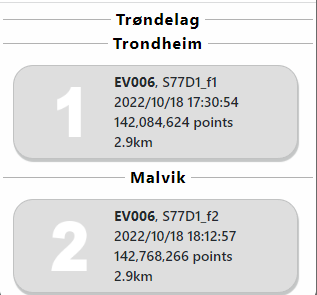
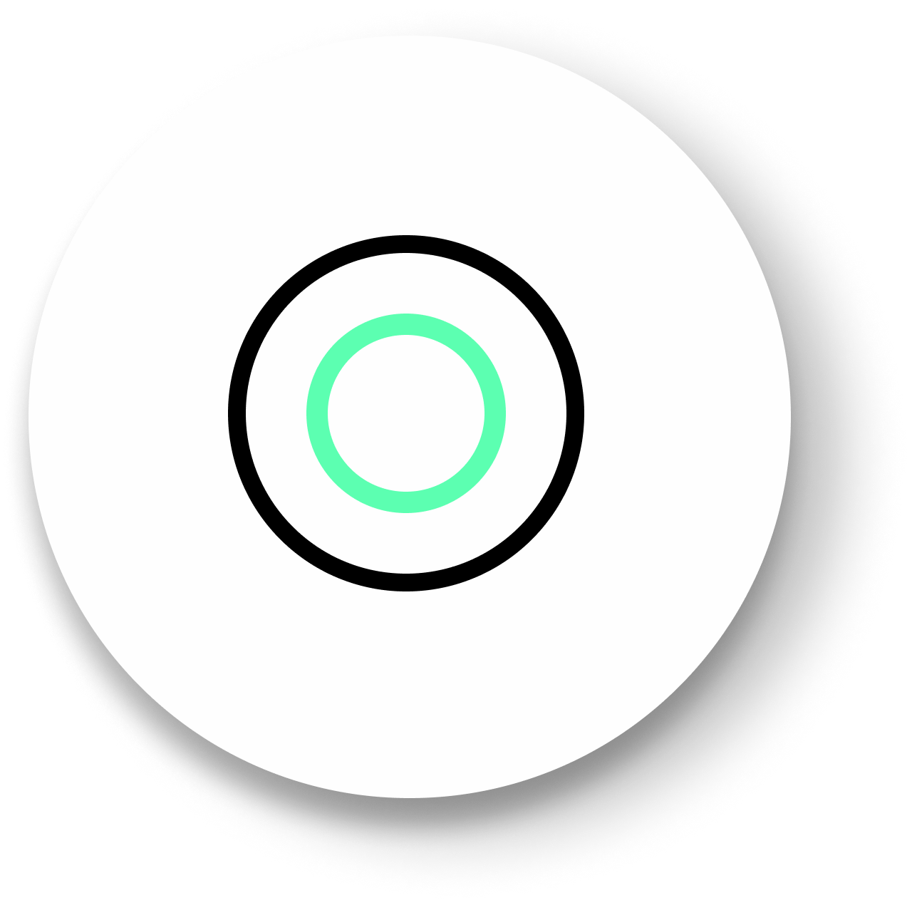

Basic Tools
Information Bar
Information bar is displayed at the top right corner of the screen. This is where you can find details about the data set. At the top it shows the name the county followed by Muncipality name. The numer in white denotes the dataset name. The other details availbale are the time stamps, Number of points and the length of the dataset.
Measurements
Angle
{kind=link}
This tool measures the tridimensional angle formed by the lines connecting three points.To start a measurement, click on the angle icon, then left click on the third point and the process will be automatically ended.
Point
{kind=link}
This tool highlights a selected point and display its XYZ coordinate. To start a measurement, click on the point icon, then click on the desired point and the process will be automatically ended.
Distance

This tool measures the tridimensional distance of the lines connecting a series of points. To start a measurement, click on the distance icon and start clicking on the desired points (two or more). Right click to finish measurement.
Further information such as total length can also be obtained from selecting this under the scene section.
Circle

This tool measures the radius of a circle formed by three points. To start a measurement, click on the circle icon and then click on the desired three points. The process will be automatically ended.
Further information such as Circumference can also be obtained from selecting this element under the scene section.
{kind=link}
Point Budget
The point budget limits the number of points loaded and rendered at any given time, which helps to adapt performance requirements to the capabilities of different hardware. It gives you a complete version of point clouds.
Recommended values are between 500.000 and 10.000.000.
360 Images
360 Imagess allow you to see actual images of the point cloud.These images are displayed as white sphere in the viewr, click on any of them to enter it. This view will give you an overlook on how the territory looked like and what objects could be captured.
360 Images can add meaningful context to collected data and fill in the information lacking in the point cloud.
Display Options
RGB
RGB display each point based on the original scan colors
Intensity
Display each point based on the laser pulse return intensity value. Scanners identify an intensity value for each point during the capture process. Intenisity is a measure of point reflectivity, which can vary depending upon color, surface texture, surface angle and the environment.